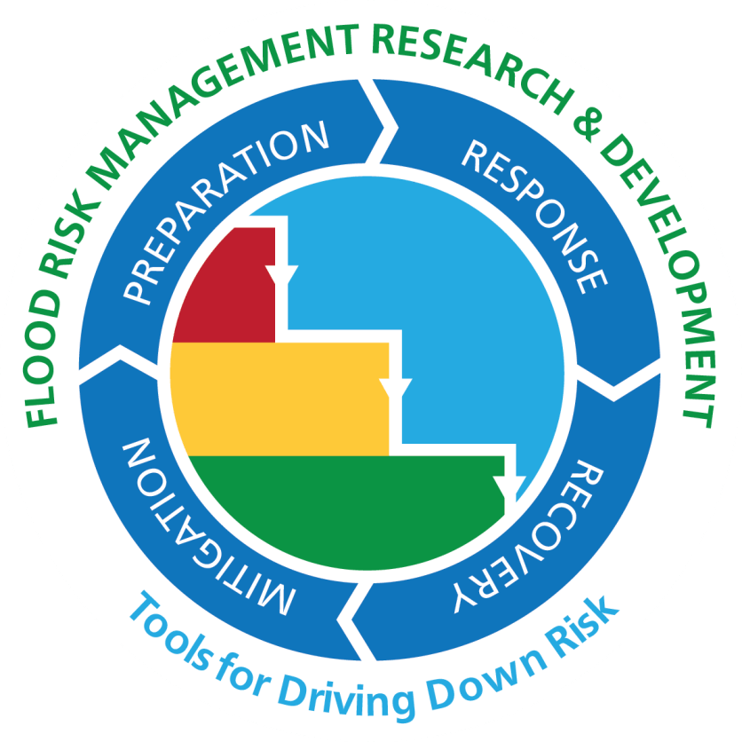
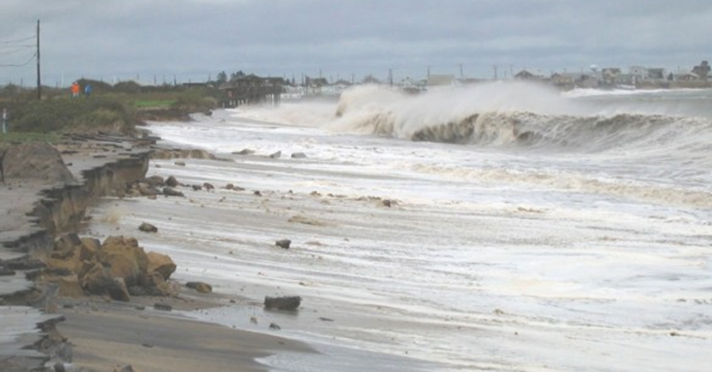
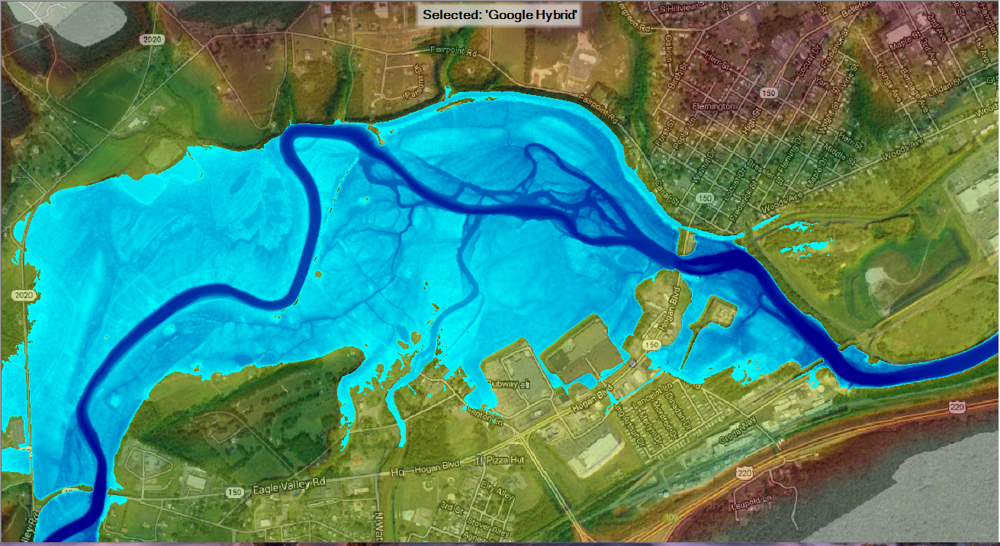
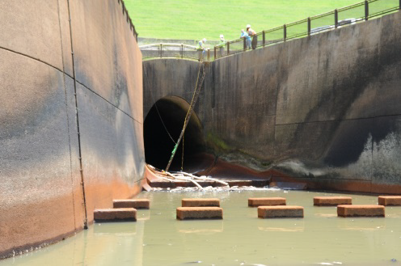
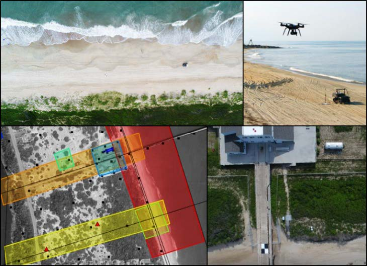

|
As part of the Corps’ Coastal Storm and Flood Risk Management mission, the Corps is responsible for more than 700 dams, operates over 400 major lakes and reservoirs, maintains 8,500 miles of levees, and has over 100 coastal storm damage reduction and related projects. In the U.S., flooding and impacts from coastal storms cost approximately $4 billion annually. Consequently, over the past several years, federal coastal storm damage reduction expenditures increased to more than $100 million per year to protect the public and related economic investments. |

|
|
 Resilient Coastal Systems |
 Watershed Mangement |
 Resilient Infrastructure |
 Emergency Management |